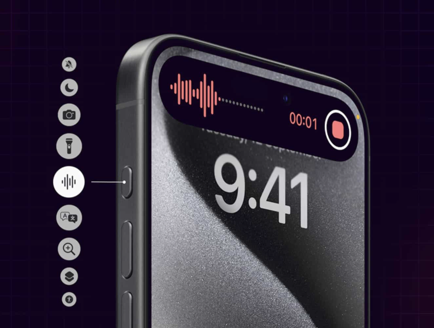
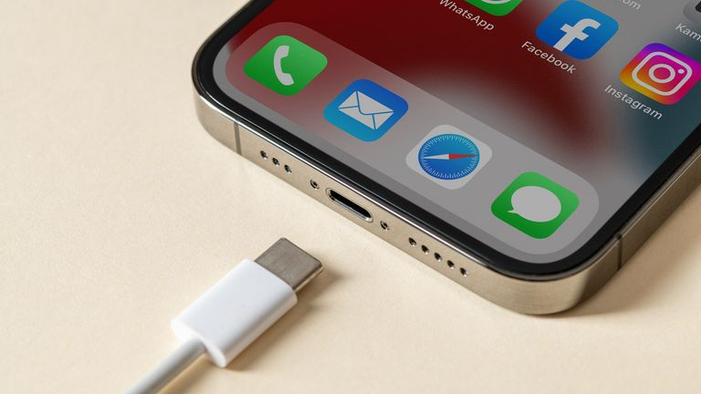

New Telephoto Lens
120mm 5x Telephoto Lens: The iPhone 15 Pro Max features a 5x 120mm telephoto lens, providing more reach and creative photography options. Improved Night Mode: The Night mode feature has been enhanced for better low-light photography.

Action Button
The Action Button is perhaps the biggest hardware upgrade the iPhone line has received in years. It’s not a particularly advanced piece of technology , but its programmability lets you use your iPhone in completely new ways.

Type C Cable
You can charge your iPhone with a USB-C cable and power adapter compliant with the USB-C standard, including USB Power Delivery such as the cable that comes with your iPhone. These cables and power adapters are widely available from Apple and other manufacturers.